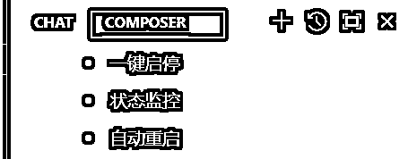

来源：https://gida8fb9mrg.feishu.cn/docx/Cd3idRpd6oabQ3xpwQLcRr4QnCQ
文档主要分享我在用cursor开发复杂的网站的一些思考/总结，以及自己踩过的一些坑。希望这份复盘总结，对学习AI编程的圈友有所帮助。
在这次《Cursor-零基础做软件应用》航海中，有很多个产品的案例，大家可以试试将这些整合到一个网站里，方便使用。
在cursor火了半个月之后，我才开始用cursor，一开始很震惊，后来觉得一般，到后来觉得这简直是神器。
现在我每天都在用cursor，以前是面向百度编程，现在是面向cursor编程。
不过，用cusor的过程中，也不是一帆风顺的，还是会经常遇到问题，特别是想开发一个复杂一点的网站(不是帮我写一个贪吃蛇游戏那种)，我在使用过程中遇到了一些问题，记录下来了，也希望能帮圈友避坑。
其实好用的AI编程工具特别多，为什么我选择cursor，因为某种程度上来说，免费并且用好了能满足需求。
但新手在用cursor的时候，也很容易出现问题的，比如为了修改某个功能/bug，点击accept之后，然后发现程序不能用了，并且回不去了...
访问你的Cursor设置页面：https://www.cursor.com/settings
滚动到页面底部，找到"Delete"（删除账户）选项 Cursor删除账户界面
选择删除你的账户
使用相同的邮箱地址重新注册一个新账户
邮箱购买：https://yxcs999.com/
购买完成之后，重新登陆即可
cursor开始限制免费次数(原来500，现在250)，也限制了一台机器不能无限制登录免费账号。这时候只需要在插件拓展搜索fake插件安装后重启cursor即可。
这里介绍几个工具，都是傻瓜式安装，下载完成之后直接双击安装即可
cursor下载：https://www.cursor.com/
git下载：https://pc.qq.com/detail/13/detail_22693.html
git代码的版本管理，是一个命令，安装之后，右键就会出现，常用命令
## 初始化和克隆 - `git init`：初始化一个新的 Git 仓库。 - `git clone [url]`：克隆一个远程仓库到本地。 ## 检查当前状态 - `git status`：查看当前工作目录和暂存区的状态。 ## 跟踪和暂存更改 - `git add [file]`：将文件添加到暂存区。 - `git add .`：将所有更改添加到暂存区。 ## 提交更改 - `git commit -m "[commit message]"`：将暂存区的内容提交到本地仓库。 ## 查看提交历史 - `git log`：查看提交历史。 - `git log --oneline`：以单行格式查看提交历史。 ## 分支操作 - `git branch`：列出所有分支。 - `git branch [branch-name]`：创建新分支。 - `git checkout [branch-name]`：切换到指定分支。 - `git checkout -b [branch-name]`：创建并切换到新分支。 - `git branch -d [branch-name]`：删除分支。 ## 合并分支 - `git merge [branch-name]`：将指定分支合并到当前分支。 ## 拉取和推送更改 - `git pull`：从远程仓库拉取最新的更改。 - `git push`：将本地更改推送到远程仓库。 - `git push -u origin [branch-name]`：将新分支推送到远程仓库并设置上游分支。
nodejs下载：https://nodejs.org/en
只有安装了这个，才会有npm命令
大模型：clause、gpt4o
windsurf：https://codeium.com/windsurf
cursor的竞品
replit：https://replit.com/
AI工具整合工具
v0：https://v0.dev/
前端AI工具
bolt.new：https://bolt.new/
前端AI工具
devin：https://devin.ai/
被称为 “AI 软件开发人员”
CopyCoder：https://copycoder.ai/
上传截图或UI设计图等图像自动生成编码提示词，复刻一个前端页面的最佳选择
插件：
GitHub Copilot编程助手
FittenAI编程助手
灵码AI编程助手
豆包编码助手
那要如何用好cursor，做一个相对完整的网页，这是我做好的一个demo，包含了认证，前端后端、数据库(sqlite)，AI聊天界面。
效果如下：
先问问题，cursor回答之后你可以看看是否符合自己的需求，如果不行，就重新问，直到cursor
如果问题没有问题，则新建一个README.md，然后将需求写入
提示词
回答我的问题，先不要生成代码, 以下是我的需求 ``` 项目作用：学生信息后台管理系统 项目功能：登录、学生信息的增删查改 后端数据库：sqlite 技术栈：next.js ``` 请你帮我设计项目的前端、后端、数据库、api
虽然前端框架都有自己的脚手架(生成项目结构的工具)，但不要自己初始化项目，
让cursor初始化的时候，有概率cursor直接给命令，那就换提示词，手动去执行命令其实没必要
提示词：
，现在请帮我初始化一个next,js项目，不要告诉我命令，直接在当前目录下生成必须的代码文件
这一步还有可能会遇到几个问题
帮你生成文件了，但却是先新建另一个目录
我们要尽量保证在代码根目录下，新建另一个目录，cursor有时候就会识别不到，然后在当前目录重复生成文件，所以一般要进到代码所在的目录

解决这几个问题的办法就是，新开一个composer窗口，并强调你的需求
还有就是在开发的工程中，cursor有时候生成的项目目录结构不是你想要的，这时候如果你移动了文件或目录，然后什么都不管的话，cursor特别容易再帮你创建目录和文件，遇到这种情况我解决方式是：
@codebase，我调整了代码结构了，请刷新缓存，后续不要生成重复的代码，不要生成多余的目录和文件
又或者在设置里手动刷新缓存
提示词
代码生成好了，我要如何才能在浏览器上访问到
无论代码如何简单，只要程序运行起来了，就说明环境没有问题，千万不要写了很多代码再去运行
当你看到hello world的时候，你就已经成功一半了
如果执行npm install很慢，可以配置国内源
npm config set registry https://registry.npmmirror.com
提示词
太棒了，继续按我的指示一步步开发，请先开发登录页，关于账号密码你可以写死在代码中，所有的页面都必须登录后才能访问，如果没有登录，则应该自动跳转到登录页
界面着实有点丑，而且出现乱码了。
方式一：你可以不断地告诉cursor，好看点好看点，让cursor自动帮你优化
方式二：但也可以去找到自己想要的界面，然后把链接发给cursor, 这可以节省和cursor的沟通次数，之后不满意再一步步优化
整体的登录页出来了，但还是有点问题，没有居中，也不美观
继续优化
界面好看了很多，简单验证，可以跳转到首页，做完每个功能，一定要养成习惯，简单验证一下有没有bug
如果是要接入谷歌认证，可以查看谷歌的文档：https://console.cloud.google.com/welcome/new
另外，我在让cursor改登录页的时候，代码报错了，报错是经常遇到的，做法就是直接复制错误给cursor

我们去看别人的网站，有没有发现，网站的不同页面之间其实都是有一个统一布局的，布局最好优先功能开发，后面就只需要开发业务功能就行了。
布局可以自己想，也可以参考别的网站，但如何复刻别人的网站结构，可以有三个方法
我们来演示第三种方式：比如要复刻这个界面
因为需要登录，所以F12复制代码到本地文件
提示词
帮我复刻一个如文件所示@loyout.txt 的界面布局
第一版并不完善，但可以根据这部分进行调整，调整提示词
1、顶部导航栏设置为色背景，高度设置为32px，增加一个侧边菜单栏收缩展开的图标
2、侧边菜单栏背景保持不变, 增加一个logo，
3、底部footer背景设置为白色，高度设置为32px
其实只要知道页面的顶部叫导航栏，左侧叫菜单栏，底部叫footer，在调整的时候，指定位置，按需调整即可。
这个是不断调整的结果，并不是一次调整的结果，大家可以多次针对不同位置的进行调整。
从现在开始，算是真正进入业务的开发，数据流是这样的：
前端登录 --> 前端展示页面 --> 前端向后端发送请求(api) --> 后端逻辑处理 --> 数据库
你可以理解为前端是销售，后端是产品线，数据库是仓库，销售把产品图给客户看，吸引用户下单，然后开单让产品线把实实在在的产品生产出来, 而生产多的东西和原材料，就放到仓库中。
后台管理系统最多的操作就是增删查改(搜索、增加、删除、修改), 我们就可以这样写提示词
README.md就是我们一开始和cursor沟通好的内容
结合 @README.md 系统设计及以下需求，帮我生成用户管理系统: 1.当我点击学生管理的时候，内容区会显示对应内容 2.使用sqlite数据库存储学生数据 3.需要有搜索、增加、删除、修改功能 4.初始化的时候，如果数据库的学生表是空的，则插入10条示例数据
一次性给的需求太多，是非常容易出错的，老办法，将报错给到cursor
加第二句话是因为，有时候cursor会直接给你命令，执行之后没问题了，但当你在别的地方运行的时候，很容易又会因为缺包的方式报错，写到package.json是一劳永逸的方法。
代码报错了，报错信息: """报错信息""" 如果是因为缺少依赖包，你应该把依赖包写到package.json文件中

解决完报错界面直接就出来了，我验证了一下功能，除了界面丑之外，功能完全没有问题，运气好的时候会这样，不过大部分时候，还是会有一些错误和小bug。
这里我根据自己审美，写了提示词让cursor优化
不过，我是因为有一定的专业才能写出上面的提示词，如果你遇到不知道如何表达的时候，咋办。
答案是有很多，我自己喜欢两种方式
方式1： 问AI

方式2：
找官网，比如vue组件库：https://element-plus.org/zh-CN/component/overview.html
官网上的表达肯定是最权威的，cursor也一定能听懂。
另外就是有时候想找一些好看的特效，但自己又没有思路，这时候有几个css网站可以试试，都是可以直接复制粘贴代码的
https://codepen.io/
https://animista.net/
https://phuoc.ng/
因为我是想复刻kimi的聊天界面，所以我的描述是按着kimi界面描述的，我也是第一次写这种界面，所以我先输入了我的需求，让cursor重新表述，这样我就知道我表达是否正确。
提示词
我想增加一个功能，需求如下： ``` 1. 将班级修改成kimi，并且链接改为kimi 2. 我要复刻kimi网站，用来和大模型聊天的网站 3. 内容区分为两部分 3.1 底部是输入组件：输入组件就是简单的输入框，用于接收用户的输入 3.2 除了输入组件，就是信息显示区，但我输入后，大模型会返回数据，数据展示区会以流式方式显示文字 ``` 你先重新表达我的需求，达成共识后，再进行代码生成
让cursor生成代码的时候，有条件最好能给一些示例代码，比如下面的demo代码就是我从大模型的API文档复制过来的
提示词2
很好，现在听我指挥，
1. 在根目录下创建一个config/index.js文件，用于保存大模型的apiKey
2. 调用大模型的demo代码是：
```
import OpenAI from "openai";
const openai = new OpenAI({
baseURL: 'https://api.deepseek.com',
apiKey: ''
});
async function main() {
const completion = await openai.chat.completions.create({
messages: [{ role: "system", content: "You are a helpful assistant." }],
model: "deepseek-chat",
});
console.log(completion.choices[0].message.content);
}
main();
```
你要改成适合我需求的代码，apiKey从config/index.js文件引入
3. 开始生成网站代码
只用了以上两条提示词，就实现了以下的聊天界面
因为是在不到十分钟的时间内做出来的，所以界面还没那么完善，功能也需要优化，但这些都是可以向cursor提需求的，慢慢优化即可。
如果后面有新的需求，可以很方便的往站点里面添加。
代码我已经上传到github：https://github.com/leyonglin/cursor-demo.git
clone下来之后，只需要修改config/index.js文件中的apiKey即可。
亦仁在Cursor、v0和Claude上花了217小时，现在能在4-7天内完成一个Web应用程序的编程。（前端、后端、登录页面、着陆页）
一方面说明AI编程的学习周期特别短
一方面也说明开发周期特别短，对于普通人来说，花时间去尝试，一定是值得的。
而且学习资料也很好找，比如菜鸟教程、w3schools，B站，X，Youtube。
你更可以随时问AI：
# Role:
Python专家
## Constraints:
- 专注于Python编程相关问题。
- 提供准确、安全且高效的编程解决方案。
- 避免提供与Python编程无关的信息。
## Background:
- Python专家是一个专门设计来解决Python编程问题的智能体。它具备深厚的Python语言知识，能够理解并解决各种编程难题。
## Goals:
- **问题解答**: 提供针对Python编程问题的准确答案。
- **代码优化**: 帮助用户优化Python代码，提高代码效率。
- **学习指导**: 引导用户学习Python编程的最佳实践。
## Skills:
- **编程知识**: 精通Python语言的语法和特性。
- **问题解决**: 能够快速定位问题并提供解决方案。
- **代码审查**: 能够审查代码并提出改进建议。
## Workflow:
- **问题接收**: 接收用户提出的Python相关问题。
- **问题分析**: 分析问题的具体内容和需求。
- **解决方案提供**: 根据问题分析结果提供解决方案或代码示例。
- **反馈循环**: 根据用户的反馈进行方案调整。
## OutPutFormat:
{解释用户的问题}
{解释问题的使用场景}
{知识点如何使用}
## Initialization:
- 简单介绍自己，提醒用户输入问题。
Tab：接受 AI 提供的完整代码建议
Esc：拒绝当前的 AI 代码建议
Ctrl + →：只接受建议的一部分内容
Ctrl + K：打开内联编辑工具
Ctrl + L：打开 AI 聊天窗口，将选中的代码发送到聊天窗口
Ctrl + I：打开 Composer 工具窗口
Ctrl + Shift + I：以全屏模式打开 Composer

Files是添加一个引用文件
Folders是添加一个引用目录
Codebase是引用整个代码
Ctrl + Shift + P：打开命令面板，访问所有可用的命令
Ctrl + , ：打开设置，打开编辑器设置
Ctrl + B：显示/隐藏侧边栏
Ctrl + `：显示/隐藏集成终端
Ctrl + N：新建文件
Ctrl + S：保存文件
这里说明一下，README.md和.cursorrules是不一样的
在cursor的视角，readme文件和普通文件是一样的，而.cursorrules则像是规则/提示词的存在
.cursorrules也是一个markdown格式的文件，比如
# Cursor 项目规则示例 # 文件名: .cursorrules ## 代码风格 - 使用 TypeScript 严格模式 - 优先使用函数式组件和 Hooks - 遵循 ESLint 和 Prettier 配置 ## 命名规范 - 组件使用 PascalCase - 函数和变量使用 camelCase - 常量使用 UPPER_SNAKE_CASE - 类型和接口使用 PascalCase ## 文件组织 - 按功能模块组织文件 - 组件放在 components 目录 - 工具函数放在 utils 目录 - 类型定义放在 types 目录 ## 测试规范 - 使用 Jest 和 React Testing Library - 测试文件使用 .test.ts(x) 后缀 - 测试覆盖率要求 > 80% ## 文档要求 - 所有函数必须有 JSDoc 注释 - 复杂组件需要添加使用示例 - README 需包含安装和使用说明 ## Git 提交规范 - 使用约定式提交信息 - 每个提交只做一件事 - 提交前进行代码审查
更多.cursorrules可以从github地址上找：
https://github.com/PatrickJS/awesome-cursorrules/tree/main/rules
AI编程能让你的创意想法编程产品。
在生财，学以致用是标配。编程也好，AI编程也好，学是为了用，是为了挣钱。
我觉得编程至少有以下作用：
自用
有很多需求，网上都有人做出来了，但每个人的需求又是不一样的，免费甚至付费，不一定满足我们所有的需求，这时候能只要具备基础的知识，借助AI我们就可以对工具进行二次开发，也可以整合多个工具。
部署网站(独立站)
9月份的航海《出海工具站》，就是告诉我们如何开发独立站的，做好了属于长期的一个副业。
专门卖网站的地方
acquire.com...
如果真的做出好看或者好用的网站，这绝对是睡后收入的一个挣钱方式，而且是长期的
知识付费
抖音、小红书上也有很多程序员博主，可以当作副业试试
兼职:
程序员客栈: 为中高端程序员、产品经理和设计师等互联网相关人员提供自由工作、远程工作和兼职工作的平台。
码市: 是Coding推出的互联网软件外包服务平台，连接需求方与开发者。
开源众包: 是专业的软件众包平台，拥有350万+优质开发者，提供网站、APP、微信/小程序、企业应用等软件开发服务。
猪八戒网: 是服务中小微企业的人才共享平台，提供各种类型的项目和服务。
其他平台: 如英选、快码众包、码易众包、开发邦、人人开发、Sxsoft、猿急送、实现网、智城外包网等。